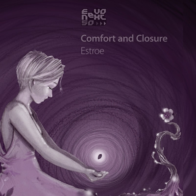
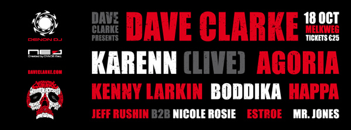

Estroe: It’s my goal to make timeless music
{kind=link}
Born and bred in the clubbing scene of the Dutch capital, Estroe makes for a natural choice to have a bit of a chat with before the Amsterdam Dance Event industry gathering kicks off this Wednesday – and all the hectic partying that goes along with it.
It’s great timing for Estroe as her second Comfort and Closure LP is on the cusp of release on her EevoNext label, and she’ll be showcasing the album’s mix of downtempo and dancefloor delights during ADE at the Dave Clarke Presents gig at Melkweg on Friday night.
In the leadup to the show, I Voice grabbed her to find out a little bit more about what we can expect.
How has your 2013 been going so far?
2013 has been a year with new initiatives and hard work. I finished the album in August and I also launched my estroe-advice.com agency around then. Everything came together at the same time, which made it crazy hectic. Right now I’m preparing for ADE.
First up, congratulations on your new album Comfort and Closure. How are you feeling now it’s nearing release?
Thank you very much, it’s exciting, so far not many people have listened to it yet, but the first feedback is promising. I hope people conclude that my sound has matured more since the first album, which came out in 2009. It’s a scary thought that people can compare them now but I really did the best I could, I can just hope people like it.
{kind=link}

Tell us a little bit about your vision for the album. Was it clear in your head before you began working on it, or did it come together during the creative process?
It started with four or five tracks that I had already finished. I realised that it had been a while since the first album came out and the idea rose to make more tracks around the ones I had already collected and make a coherent story for a new album.
But since the beginning I wanted to make an album with both ambient/home listening tracks, and tracks for the dancefloor. Some of the new stuff made it to the album, other ones didn’t fit well, so I made a selection at the end.
I wasn’t planning to put my emotions in my music, I just produced whatever came to mind but when I look back I realise that once again the deeper, slower tracks were made in this period...The album begins with some really lush downtempo sounds in the form of Unconscious Suppression, which sets the tone well for what’s often quite a mellow album. How important was it to create an album that would have a life outside of the nightclubs?
Very important, I really like to listen to downtempo electronic music myself and I always aim to make tracks that you can listen to at home but might be able to play in the early hours of a DJ set as well. Nowadays club tracks don’t live very long. It’s my goal to make timeless music.
There’s some proper techno in the second half of the album. Were you aiming for something here that would work functionally within your DJ sets?
Yes, that was a challenge as I usually make deeper stuff, I wanted to make some more energetic, less sweet sounds, not so much to play it during my sets - as I don’t often play my own music – but I wanted to make the album with a certain flow, a flow that when you start listening in the beginning it slowly takes you of the couch and make you want to go out and dance at the end.
{kind=link}
You mention in the press material how your inspiration on the album was partly born form some very tough personal experiences. As much as you’re willing or able to share, tell us a little bit more about these experiences.
It’s very personal stuff that concerns not only me so I really rather not talk about what it is specifically, my loved ones know what a stressful time it has been. I found comfort and distraction in my music. I wasn’t planning to put my emotions in my music, I just produced whatever came to mind but when I look back I realise that once again the deeper, slower tracks were made in this period. Especially the title track Comfort and Closure means a lot to me as it was a turning point. After producing that track I felt space in my heart to move on.
The album will be coming out on your own label EevoNext. How important is it that you’re able to release it through your own channels, and what’s your strategy for making your imprints stand out in such a crowded environment?
It made sense to release it on our label, which run together with Stefan Robbers. it’s tempting to go look for a bigger label with more exposure, but as we really believe in our label, and the music fits really well with our music taste so I decided to release it under EevoNext. It’s also catalogue number 50 so that makes it extra special.
To stand out with your music is almost impossible in this time where a dozen of albums come out every week, I realise that. We are doing a special vinyl exclusive pre-release with remixes by Aril Brikha and Ray Kajioka that will come out 24th October and then the album will follow the 14th of November.
There will be a release party in Amsterdam the 16th of November and I’ll be doing an album tour. But I hope the music speaks for its self and will gain word of mouth promotion.
{kind=link}

You’ve risen to prominence in the Amsterdam house and techno scene, which is representing stronger than ever in 2013. Was it an inspiring place to work your way up?
I’ve lived in Amsterdam for 15 years but I moved to Rotterdam 5 years ago. My neighborhood here is very quiet which makes it easier to work in the studio, not so many distractions. I travel back and fourth between Amsterdam and Rotterdam as I now have friends and relations in both cities. Both cities inspire in a different way. Amsterdam is always very vibrant with extravagant people and many tourists, it always gives me energy. Rotterdam is more back to basics with a working mentality, which gives me drive to move on.
ADE coming up this week is a great example of how vibrant the scene is, in and around Amsterdam. Is it something you take part in every year?
Definitely! It’s the perfect opportunity to meet up with all my DJ, producer and label colleagues. With so many people I’ve been doing business with online, chances are big that they attend ADE so I can finally meet them. This year that’s also the case. Furthermore I’ll do an Ableton workshop on how to remix even faster with Ableton 9 and I’ll be in the Vinylized panel (a panel about a Dutch producer contest). As for my Estroe-advice business, it’s also good to meet up with people.
Electronic Music Advice
www.estroe-advice.com
You’ve got a pretty gig coming up during ADE, as part of the Dave Clarke Presents gig at Melkweg. What can we expect from this one?
It’s something I look forward to every year. I do the beginning of the evening from 10pm, In the Max Hall of the Melkweg.It’s always nice to build up the tension and as this is a proper techno event I play some stuff that I don’t always get the chance to; my darkest and deepest stuff. It will be live broadcasted by be-at.tv as well. The line-up is very interesting too, with names like Agoria and Kenny Larkin who I really want to hear play when I’m finished.
Album Release: Comfort and Closure - 14th November
Friday October 18th -10pm - 06:30 - Melkweg
Line up
Dave Clarke
Karenn (live)
Agoria
Kenny Larkin
Boddika
Estroe
Mr. Jones
Jeff Rushin & Nicole Rosie
***
|
|
||||||||||||||||||||